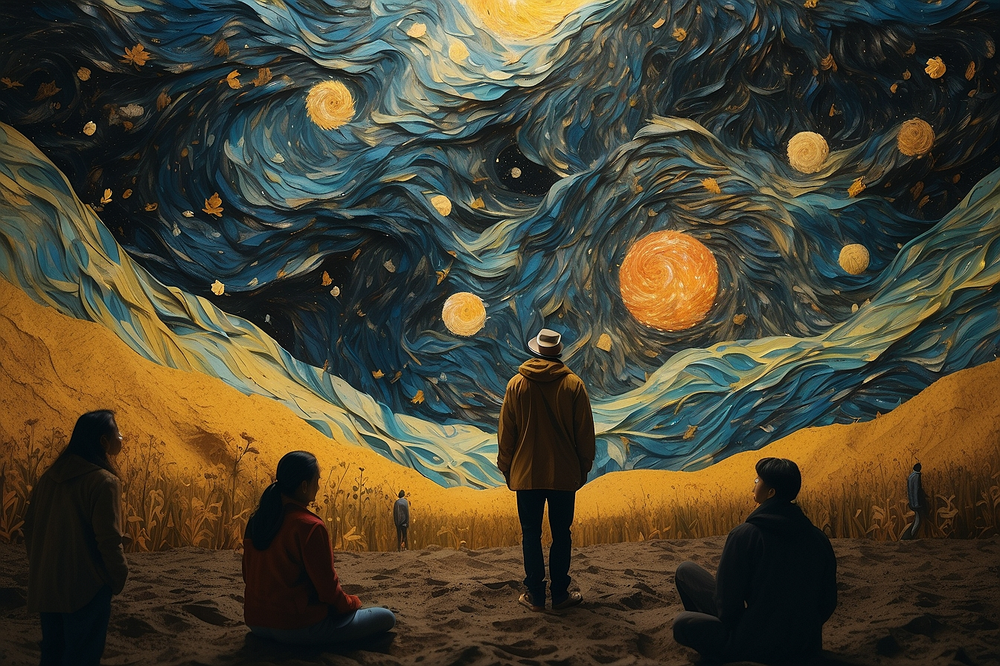

Van Gogh-style Rework
I love Van Gogh. I've always enjoyed looking at his artwork, especially Starry Night, though many more exist. I had the rare opportunity to visit the Van Gogh Museum in Amsterdam once and it was amazing. I know AI can do some amazing things, so I wanted to see what kind of perspective it could give on Van Gogh. I don't view this piece as ground breaking, it's more of a copy than anything original. The prompt I used for this was 'A stupendous illustration in the style of Van Gogh showing multiple people and the harmony of the universe showcasing flowing, rhythmic color tones and patterns that coerce the viewer into a mild state of euphoria,' and I used Leonardo.